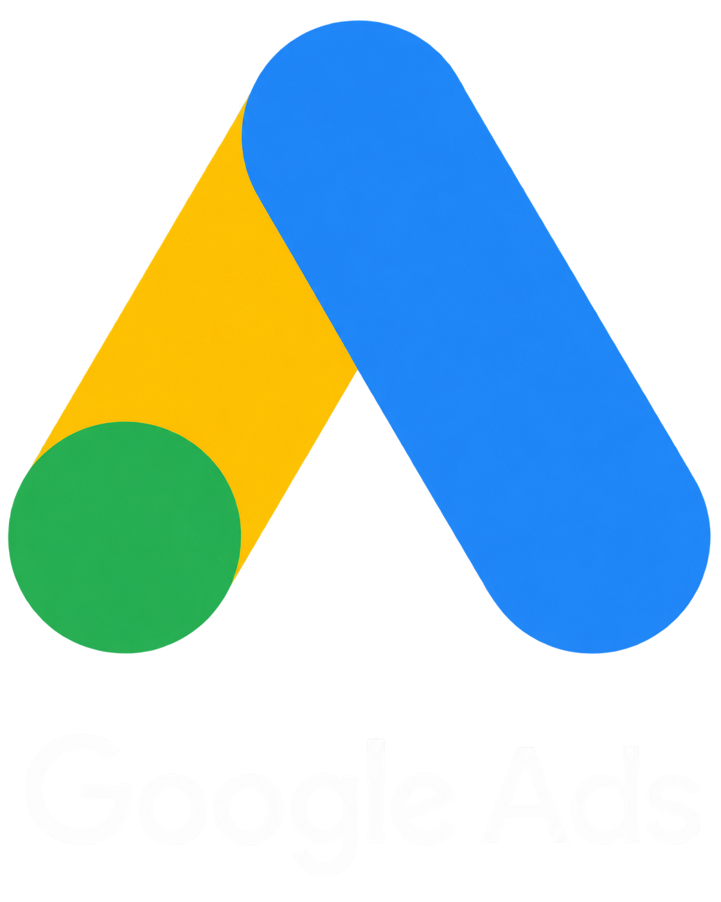
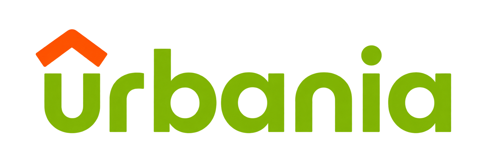
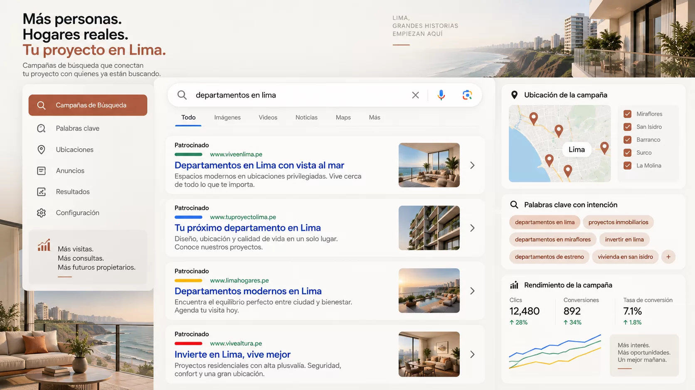
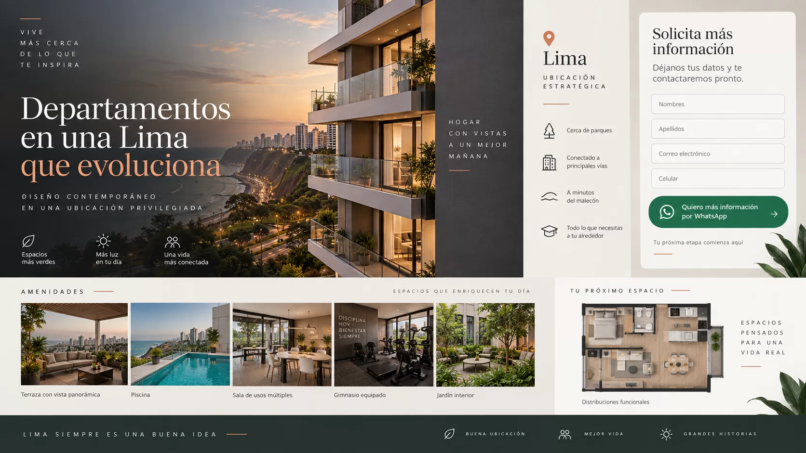
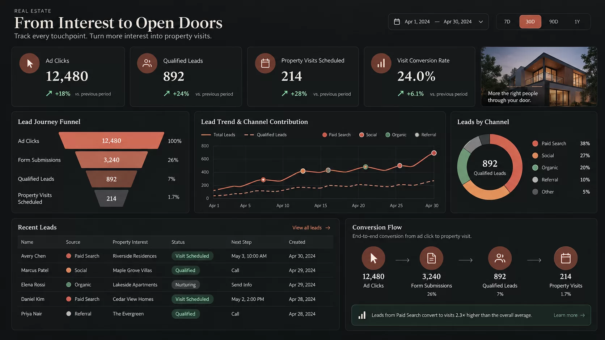

+
Más rentable que invertir solo en Urbania
Genera leads propios y optimiza continuamente tu costo por adquisición.
Google Ads inmobiliario
Reduce el desperdicio de tus campañas hasta 30% y convierte búsquedas de alta intención en visitas agendadas. Anuncio, landing y CRM en un solo sistema.
Google Ads vs. portales
Los portales te dan exposición. Google Ads suma intención de compra, datos propios y optimización continua para que cada sol invertido trabaje mejor.

+
Genera leads propios y optimiza continuamente tu costo por adquisición.
Google Ads conecta tu proyecto con personas que ya están buscando comprar.
Dirige el tráfico a tu página y construye una base de clientes propia.
Google Ads no reemplaza necesariamente al portal: reduce la dependencia de una sola fuente y permite medir el recorrido hasta la visita agendada.
01 — Sistema completo
Urbania te da presencia dentro de un catálogo. Google te permite aparecer exactamente cuando alguien busca “departamento en Miraflores”, “lotes en Asia” o “proyecto en preventa”. Capturamos esa intención y la medimos hasta la visita.

Campañas por zona, tipo de inmueble, etapa del proyecto y búsqueda transaccional: “departamentos en preventa”, “lotes en venta”, “condominio en playa”.

La página responde rápido: beneficio, ubicación, metraje, amenidades, prueba visual, WhatsApp y formulario visible sin fricción.

Eventos de formulario, WhatsApp, llamadas y calidad comercial para optimizar por leads calificados, no solo por clics baratos.
02 — Método Steid Hub
Los portales concentran tráfico, pero compites al lado de decenas de proyectos. En Search compras una oportunidad concreta, con mensaje propio, zona propia y seguimiento propio.
Mapeamos términos de búsqueda, competencia, negativas y oportunidades por distrito, playa, provincia o tipo de unidad.
Armamos una página con jerarquía comercial, contenido visual, formularios cortos, WhatsApp y llamados a agenda.
Medimos CTR, costo por lead, tasa de contacto, calidad del lead y visitas agendadas para mover presupuesto donde convierte.
03 — Resultados medibles
Cada proyecto tiene una línea base distinta. Trabajamos con metas de mejora sobre tus datos actuales para que la inversión publicitaria tenga dirección comercial.
Fuga de presupuesto
−50%
Objetivo: −30% a −50%
Con lista de negativas, exclusión de búsquedas irrelevantes y pujas ajustadas por zona y dispositivo.
Consultas útiles
3x
Objetivo: 2x a 3x
El salto habitual cuando una landing dedicada reemplaza a una web genérica que no responde la promesa del anuncio.
Conversiones trazables
100%
Cobertura completa
GA4, eventos, formularios, clics a WhatsApp y llamadas conectados al CRM.
Primera respuesta
<5 min
Meta operativa
Alertas comerciales automáticas: un lead de búsqueda se enfría en horas, no en días.
Son rangos objetivo sobre tu línea base actual, no resultados garantizados. Cada proyecto parte de un punto distinto; las metas concretas se fijan en el diagnóstico inicial.
Objetivos de trabajo
Metas de optimización definidas contra el rendimiento actual de tu proyecto.
Objetivo de optimización al limpiar keywords, búsquedas irrelevantes y audiencias de baja intención.
Meta alcanzable cuando anuncio, oferta y landing responden la misma promesa comercial.
GA4, eventos, formularios, WhatsApp y CRM conectados para entender qué campaña genera oportunidades.
Menos tiempo entre la primera consulta y la separación de la unidad: el lead llega buscando comprar, se contacta en minutos y visita el proyecto con la decisión más avanzada.
04 — Respaldo
No partimos de cero: llevamos años produciendo y pautando para proyectos inmobiliarios en distintas provincias del Perú.
Colaboraciones y más
Hemos colaborado con Century 21, RE/MAX, Domicis, Grupo Santa María, Pietro Estate, Ponte di Pietro, Riga House, Kassa, Meztai, HZN Inmobiliaria, SC Inmobiliaria, Canoli Bienes Raíces, Clausen House, Dream House Pro, Bay Drive, It's Time Perú, Karina Matheus, Paola Benites, Arvia, Haut Bâtiment, M&E y Marca.
Sigue explorando
Cada servicio resuelve una parte del embudo. Funcionan por separado, pero rinden más cuando se combinan: la pauta trae la demanda, el contenido la convence y la medición indica dónde invertir el siguiente sol.
Campañas en Facebook, Instagram y TikTok para generar leads inmobiliarios calificados a escala.
Contenido Producción de contenido inmobiliarioFotografía, video y tomas aéreas pensados como herramienta comercial, no como decoración.
Producción aérea Consultoría y producción aéreaVideo 4K, fotografía aérea y mapa 360 para mostrar ubicación, entorno y magnitud real del proyecto. Desde S/300 + IGV.
Preguntas frecuentes
Lo que suelen consultar desarrolladores e inmobiliarias antes de abrir una cuenta publicitaria.
La inversión depende de la competencia por tus palabras clave y del ticket del proyecto. En búsquedas inmobiliarias en Lima el costo por clic varía bastante entre distritos y entre términos genéricos y transaccionales. Antes de proponer un presupuesto revisamos volumen de búsqueda de tu zona, competencia y cuántas visitas necesita tu equipo para cerrar una venta.
Google captura demanda que ya existe: alguien que busca “departamentos en preventa en Miraflores” tiene intención declarada. Meta y TikTok generan demanda: interrumpen a alguien que no estaba buscando. Google suele traer menos volumen y mejor calidad; Meta, más volumen a menor costo por lead. Lo habitual es combinarlos y medir ambos por costo por visita agendada.
Puedes empezar con tu web, pero si esa página no responde la promesa exacta del anuncio, el costo por lead sube. Una landing dedicada resuelve precio, ubicación, metraje, financiamiento y prueba visual en una sola pantalla, con WhatsApp y formulario visibles. Suele ser la mejora individual con mayor impacto sobre la tasa de conversión.
Con GA4, eventos de conversión y CRM conectados. Medimos formularios enviados, clics a WhatsApp, llamadas y, sobre todo, cuántos de esos contactos se convierten en visita agendada. Optimizar por clics baratos es la forma más común de gastar bien y vender poco.
Los primeros leads suelen aparecer en los primeros días, porque estamos capturando demanda existente. La optimización real toma entre 30 y 60 días: construir la lista de negativas, identificar qué términos convierten y ajustar las pujas por zona y dispositivo.
Diagnóstico gratis
Revisamos tu campaña de Google Ads, landing page y seguimiento comercial para detectar pérdidas de presupuesto y oportunidades rápidas de mejora.
¡Hola! ¿De qué proyecto desearías conversar?